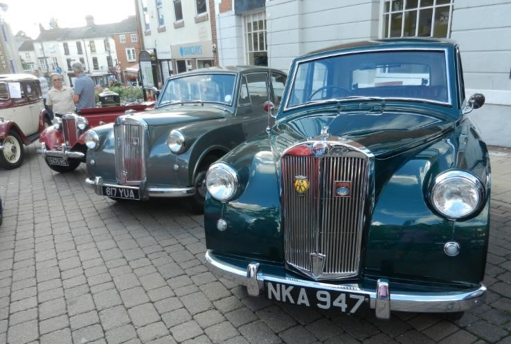

<link href="{{ site.baseurl }}/events/article.css" rel="stylesheet" type="text/css">
<main>
    <article>
        <ol id="breadcrumb">
            <li>
                <a href="{{ site.baseurl }}/">Home</a>
            </li>
            <li>
                <a href="{{ site.baseurl }}/events">Events</a>
            </li>
            <li>
                <a href="{{ site.baseurl }}/events/local">Local</a>
            </li>
            <li>Hinckley Town Centre Meet, August 2018</li>
        </ol>
        <div id="content">
            <h1>Hinckley Town Centre Meet</h1>
            <h2>16<sup>th</sup> August 2018</h2>
            
            <p>Paul Burgess and Chad Brown took their Mayflowers to Hinckley town centre for its final evening meet of the season. 76 cars were in attendance. Nice to see Chad with his Mayflower back on the road with clutch and petrol tank repaired, coming all the way from his new abode in Birmingham.</p>
        </div>
    </article>
    <aside>
        <h2>Members’ cars in attendance</h2>
        <ul class="disableListStyles">
            <li>
                <h3>Paul Burgess</h3>
                <div>
                    <div class="numberPlateMarker">NKA 947</div>
                </div>
            </li>
            <li>
                <h3>Chad Brown</h3>
                <div>
                    <div class="numberPlateMarker">617 YUA</div>
                </div>
            </li>
        </ul>
    </aside>
</main>
